Open to work · Data analyst · Delhi NCR or remote
Build the future
with data.
I'm Milind. I turn messy public data into decisions a business can act on, and I check every number before it gets there.
01The board
Same dots. Three answers.
The dots start as messy data and settle into a chart from one of my projects. Switch projects, hover any dot, or tap the chart to replay it.
Are IPL teams getting value for their auction money?
Mostly not: price explains only 10% of performance. Ringed: the biggest steals and busts.
Beat their price Fell short 226 players, IPL 2025
See the analysis →02Work
What's on the shelf.
Eleven projects, each a real business question answered end to end. Drag the ring (or swipe), and open any card for the full case study.
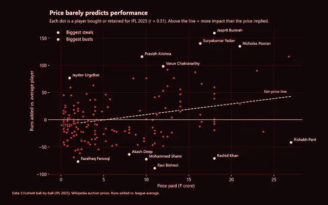
Are IPL teams paying for wins?
- Answer
- Mostly not
- Proof
- 10% of performance explained by price
- Stack
- SQL · Python
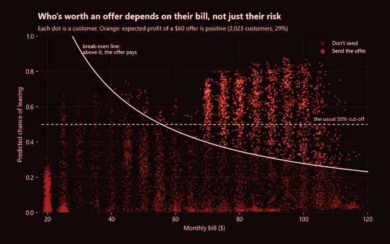
Who should get the retention offer?
- Answer
- Only the top 29%
- Proof
- +$92k vs −$122k offering everyone
- Stack
- SQL · Python
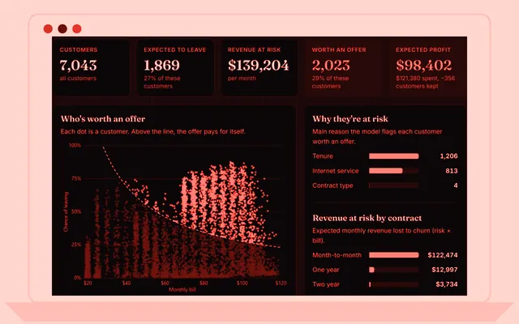
Who should the team call first?
- Answer
- 2,023 customers, ranked
- Proof
- ~$98k expected profit, live tool
- Stack
- JavaScript · Data visualization
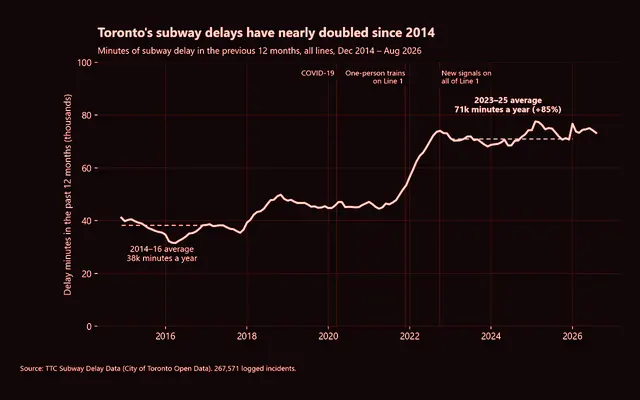
What is slowing Toronto's subway?
- Answer
- Passengers, not trains
- Proof
- 76% of the rise in delays
- Stack
- SQL · Python
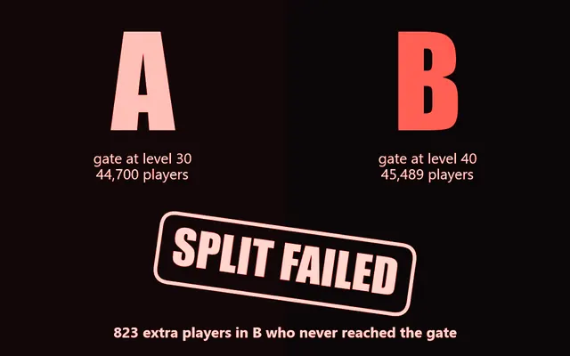
Move the first gate to level 40?
- Answer
- No, keep it at 30
- Proof
- 823 extra players broke the test
- Stack
- A/B testing · Python
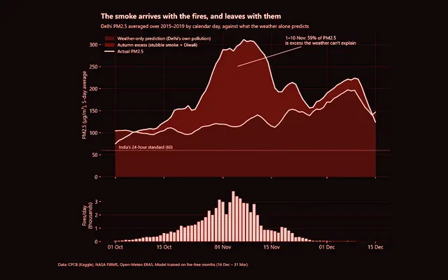
Diwali or crop fires: what causes smog?
- Answer
- Crop fires
- Proof
- ~60% of early-November smog
- Stack
- Python · statsmodels
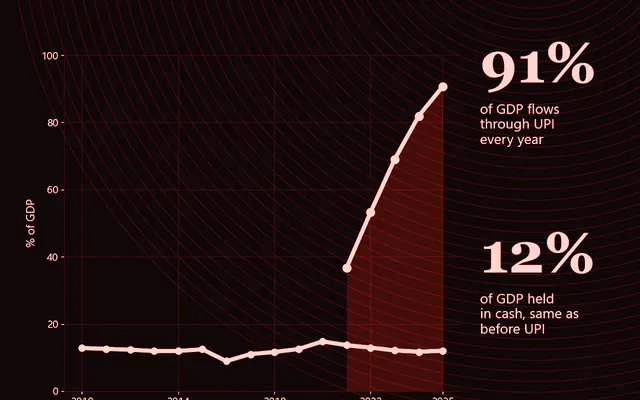
UPI won. Should banks plan for less cash?
- Answer
- No, cash still matters
- Proof
- ~12% of GDP, same as before UPI
- Stack
- SQL · Python
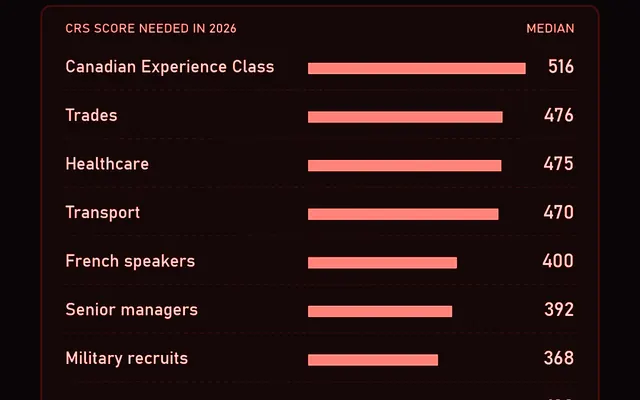
What CRS score gets Canadian PR?
- Answer
- Depends on the stream
- Proof
- 169–523 CRS: 2026 cutoffs by stream
- Stack
- SQL · Python
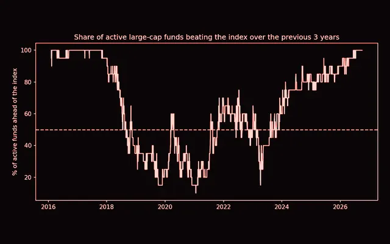
Do active funds beat the index?
- Answer
- Mostly, in cycles
- Proof
- 19 of 20 surviving funds ahead
- Stack
- Python · pandas
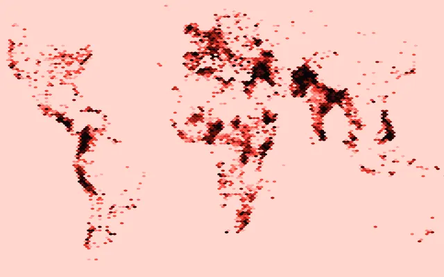
Where do attacks happen most?
- Answer
- Iraq, Pakistan, Afghanistan
- Proof
- 46% of 2012–17 attacks
- Stack
- Python · pandas
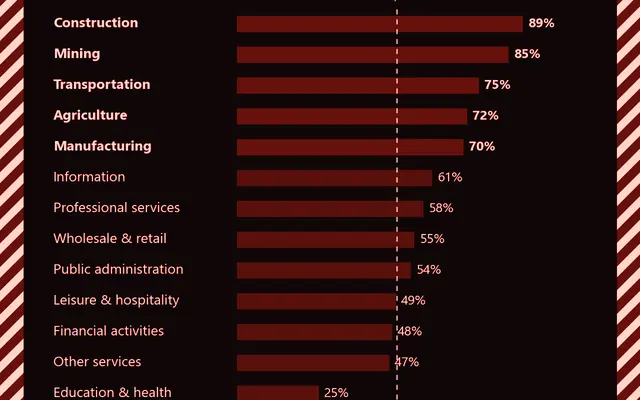
Which industries need diversity hiring?
- Answer
- Construction, farming, mining
- Proof
- 89% of construction workers are men
- Stack
- Python · scikit-learn
| Project | Question | Answer | Tools | Links |
|---|---|---|---|---|
| Moneyball IPL | Are IPL teams getting value for their auction money? | Mostly not10% of performance explained by price | SQL, Python, pandas, KPI design | Case study · Code ↗ |
| Telco churn | Which customers should get a retention offer? | Only the top 29%+$92k vs −$122k offering everyone | SQL, Python, scikit-learn, Statistics | Case study · Code ↗ |
| Retention dashboard | Who should the retention team contact first, and is it worth it? | 2,023 customers, ranked~$98k expected profit, live tool | JavaScript, Data visualization | Dashboard · Code ↗ |
| TTC subway delays | Where should the TTC focus to cut subway delays? | Passengers, not trains76% of the rise in delays | SQL, Python, Statistics, Data cleaning | Case study · Code ↗ |
| Cookie Cats A/B test | Should we move the game's first gate from level 30 to level 40? | No, keep it at 30823 extra players broke the test | A/B testing, Python, SQL, Statistics | Case study · Code ↗ |
| Delhi smog | To cut November smog, should Delhi tackle Diwali firecrackers or crop fires? | Crop fires~60% of early-November smog | Python, statsmodels, scikit-learn, APIs | Case study · Code ↗ |
| UPI vs. cash | UPI won. Should banks plan for less cash? | No, cash still matters~12% of GDP, same as before UPI | SQL, Python, Forecasting | Case study · Code ↗ |
| Express Entry draws | What CRS score does a candidate need for Canadian PR in 2026? | Depends on the stream169–523 CRS: 2026 cutoffs by stream | SQL, Python, Forecasting | Case study · Code ↗ |
| Active vs. index funds | Do active large-cap mutual funds in India beat a cheap Nifty 50 index fund? | Mostly, in cycles19 of 20 surviving funds ahead | Python, pandas, Finance, Backtesting | Case study · Code ↗ |
| Global terrorism trends | Where do terrorist attacks happen most, and what kind of attacks are they? | Iraq, Pakistan, Afghanistan46% of 2012–17 attacks | Python, pandas, matplotlib, EDA | Case study · Code ↗ |
| Workforce diversity | Which US industries most need diversity hiring? | Construction, farming, mining89% of construction workers are men | Python, scikit-learn, K-Means, PCA | Case study · Code ↗ |
03Toolkit
Four ways I turn rows into decisions.
The same toolkit runs through every project: SQL to shape it, Python to model it, statistics to trust it, and a dashboard so someone else can use it.
Shape the data before trusting it.
DuckDB and Postgres: CTEs, window functions, joins across messy sources, and data-quality checks written as SQL tests. Read the real queries:
Model it.
pandas for cleaning, scikit-learn and statsmodels for the models, matplotlib for charts people can read.
Know when to trust it.
A/B tests, forecasts and causal checks, with the uncertainty said out loud.
Describe the decision. I'll find the data.
Every project starts with a plain-English question a manager would ask, and ends with an answer they can act on, in Power BI, Excel or a live dashboard when they need to explore it themselves.
04Checks
Every number, checked.
Analysis is only worth acting on if you can defend where each number came from.
"player": "Varun Chakaravarthy ""Varun Chakravarthy"
"price": "12.00 Cr"12.0
"team": "KKR"
"matched_by": null"fuzzy · logged"
"runs_added": null+98
"checked": true
}
Illustrative record: what a messy source looks like, and what reaches the analysis.
Check the test before the result
A sample-ratio check found 823 extra players in Cookie Cats and changed the answer.
Log every unmatched row
Four name-matching methods for the IPL data, and every manual fix documented.
Data-quality tests in SQL
18 automated checks on the TTC data caught real duplicates before any analysis.
05About
Hi, I'm Milind.
I'm a Computer Science and Economics graduate interested in where data, products and business meet. I like using analysis to answer three questions: why is this happening, what should we do, and how much is it worth?
I try to prove my own answers wrong before I trust them. That habit caught a broken random split in the Cookie Cats A/B test, and a model in my Delhi project that was really just measuring the season.
- Education
- Honours B.A., Computer Science & Economics · McMaster University · 2023 · Dean's Honour List
- Looking for
- Data analyst or junior data scientist roles, Delhi NCR or remote. Available immediately.
06Contact
Need an analyst who checks the numbers?
I'm looking for a data analyst or junior data scientist role, in Delhi NCR or remote. I can start immediately.